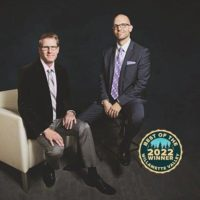

Neaman Plastic Surgery Salem, Oregon 97302
Name: Neaman Plastic Surgery
Display name: Neaman Plastic Surgery
Mission: Over the years our surgeons have had the privilege to be a part of many amazing patient transformations that changes the way they look at themselves and the world around them. At Neaman Plastic Surgery & Medi Spa, we believe in self-empowerment to undergo a life-changing transformation. We hope to facilitate that transformation by educating patients about the variety of surgical and non-surgical options available to allow them to realize the best version of themselves.
Website: https://www.neamanplasticsurgery.com/
Office hours: Mon: 8:00am – 5:00pm
Tue: 8:00am – 5:00pm
Wed: 8:00am – 5:00pm
Thu: 8:00am – 5:00pm
Fri: 8:00am – 5:00pm
Phone: (503) 868-2616
Twilio phone: (503) 868-2616
Address: 1430 Commercial St. SE, Salem, Oregon, USA, 97302
City: Salem
State: Oregon
Country code: US
Postal code: 97302
Phone: +15035491072
Neighborhood: South Central
Country: USA
GPS coordinates on map: 44.9270022,-123.0439591
Neaman Plastic Surgery
RealSelf Info
Profile created: Apr 26, 2018
Profile modified: Sep 20, 2023
Business type: Practice
Review count: 133
Rating: 4.9
Rating time spent: 5
Rating answered questions: 5
Rating bedside manner: 5
Rating after care: 5
Rating payment process: 5
Rating wait times: 5
Rating courtesy: 5
Rating responsiveness: 5
RealSelf’s PRO: Yes
Realself network status: candidate
Special Offers
Heading
Start Time / End Time
Detail
Treatments
50 Units of Botox + CoolSculpting Free with BAM
Sep 20, 2023 /
May 17, 2033
50 Units of Botox PLUS Free CoolSculpting ($1,450 Value) with Breast Rejuvenation Procedure
Specific treatments
$50 off Consultations
Sep 20, 2023 /
Dec 31, 2023
$50 off cosmetic surgery consultations (normally $150, now $100).
Any treatment
Best in Beauty 8th Annual Open House Event
Sep 6, 2023 /
Sep 21, 2023
Join us for our 8th Annual Open House event on September 21st from 9-7 pm. Special offers available online or in-person at our event. Open House exclusive specials include Open House Only Packages, as well as: 20% off all Medi Spa packages, 20% off all Skincare products, and 10% off Gift Cards.
Any treatment
Black Friday Offer – Thanksgiving weekend only!!
Nov 22, 2022 /
Nov 27, 2022
Starting November 25th thru 27th ONLY – 25% off Skincare Products, 25% off ALL packages, 15% off Injectables, and 15% off Gift Cards. Raffling off $11,500 in treatment value. Enter to win with ANY purchase! Mention RealSelf to redeem!
Specific treatments
50% off consultation fee through the end of 2018!
Oct 30, 2018 /
Dec 31, 2018
Save $50 off our $100 consultation fee.
Any treatment
20% off ZO Skincare Hydra Firm
Oct 30, 2018 /
Nov 30, 2018
ZO Skin Health’s Anti-Aging Program is our product of the month! As a kit that will transform your skin from start to finish, you’ll benefit from reduced fine lines and wrinkles, have a more even-looking skin tone, reduced appearance of pores, and enjoy that renewed youthful complexion.
Any treatment
20% off Latisse Lash Enhancer
May 2, 2018 /
Jun 2, 2018
Get your mom a Mother’s Day Gift she’ll love.
20% off Latisse Lash Enhancer.
Reg $177, Now $144.
Specific treatments
20% off Vaginal Rejuvenation Package
May 2, 2018 /
Jun 2, 2018
Introducing Exilis Ultra Femme 360 Vaginal Rejuvenation.
Introductory Rate 20% off a package of 3 treatments
Reg $1,500 NOW $1,200
Inquire to schedule your appointment
Specific treatments
Doctors
Name: Keith C. Neaman, MD
Statement: Dr. Neaman is the founder and board-certified head surgeon of Neaman Plastic Surgery & Medi Spa in Salem, OR, also serving patients from the greater Portland area. He is a body transformation specialist, focusing on breast and stomach procedures, most commonly tummy tuck (abdominoplasty) and breast augmentation operations. He has been performing cosmetic surgery since 2007 and has completed over 10,000 procedures. Dr. Neaman’s practice is the 1st Place Winner of the “Best of the Willamette Valley” competition for 5 years in a row and boasts a near-perfect 4.9/5.0 Google Rating.
Began aesthetic medicine in: 2007
Rating: 4.9
Statement: Dr. Christiansen became interested in plastic and reconstructive surgery early in his medical school years, at the University of Utah, after attending lectures by plastic surgeons, which left him awestruck that one medical specialty touched on so many aspects of surgery. And that diverse skill set placed plastic surgeons in a unique position to help people. Whether it was reconstructing an anatomic defect, surgery to improve hand function, or cosmetic surgery to improve self-image and self-confidence, for him, plastic surgery provided the opportunity to make life easier.
Began aesthetic medicine in: 2004
Rating: 5.0
Staff
Name: Gina Fredinburg
Position: Spa Manager
Biography: Gina is the dedicated Medi Spa Manager at Neaman Medi Spa. Gina is a Licensed Aesthetician and has been in the beauty industry for the last 8 years, joining the #NeamTeam in 2018. She loves all aspects of helping patients feel beautiful and is deeply passionate about caring for her Medi Spa patients. She loves being a part of Neaman Medi Spa, dedicated to caring of her patients and forming long-lasting relationships with each one of them. Gina is always available for questions or concerns and wants you to feel like part of our Neaman Family and your concerns have been fully heard and properly addressed.
Gina has lived in Salem since she was 13 years old. She loves to travel to sunny destinations and sip on Virgin Pina Coladas. Her absolute favorite thing in life is being a mom. Her husband Nick and her 4 kids are everything to her. When she’s not at work you can find her at home in her sweats, watching her kids play sports, or eating ‘In N Out’.
Name: Iveth Salazar
Position: Aesthetician
Biography: Iveth has been a licensed aesthetician at Neaman Medi Spa since 2019. She prides herself on being detail orientated with regards to caring for her patients and working hard to provide them the best possible care. Iveth is experienced with all laser and facial treatments that our Medi Spa offers including body contouring, fat reduction, skin tightening, and a wide variety of other skin care treatments.
Iveth is also passionate about educating her patients in the latest skin care techniques and technology so that they can better understand how they can be customized for their unique goals. Lastly, Iveth is a self-declared ice cream enthusiast, pet-lover (especially furry ones), and loves to explore the outdoors!
Name: Tara McDemott
Position: Nurse Injector
Biography: Tara is an experienced RN and brings her dedication and aesthetics training to Neaman Plastic Surgery & Medi Spa. Having first received her nursing degree at Chemeketa Community College, and her Bachelors in Nursing Science at Grand Canyon University, Tara enjoyed her time working in a variety of settings including hospital in-patient surgery, peri-operative services, post-anesthesia care (PACU) and post-partum. And in 2010, she discovered her passion for aesthetics.
Today, Tara has refined her skills as an injector for facial aesthetics and frequently works with Botox, Dermal Fillers, Sculptra, Kybella, and more. And as a nurse, she wants to nurture and educate with a personalized approach. She believes when her client’s needs are met, it translates into significant changes in the way patients feel about their appearance. Her love of both aesthetics and surgery make her an excellent fit for Neaman Plastic Surgery.
Name: Katie Murphy
Position: Nurse Injector
Biography: Katie is an experienced RN that joined the Neaman Medi Spa team in January 2020 as our new Nurse Injector. She grew up and completed her nursing degree in the Portland, OR area. Katie has worked in a variety of medical aesthetics positions going back over 10 years and is highly knowledgeable about the latest techniques and technology in aesthetics.
Katie has extensive experience in a variety of facial aesthetics treatments and frequently works with Botox, Dermal Fillers, Sculptra, Kybella, and more. Her passion and experience in aesthetic medicine makes her an excellent addition to the Neaman Medi Spa team.
Name: Karson Striano
Position: Nurse Injector
Biography: After receiving her degree in nursing from Chemeketa Community College in 2008, Karson started her career at Salem Hospital on Post Surgical Telemetry and then moved to Silverton Hospital Med/Surg. Karson found her way into the operating room in 2011, working in many different specialties including plastic surgery alongside Dr Neaman. Plastics has been a passion for Karson ever since, bringing her to join Neaman Medi Spa in 2018. The knowledge she has gained in the operating room has helped her to hone her skills in the aesthetic world; ultimately bringing knowledge, finesse, and compassionate care to her craft.
Karson works with Botox/Dysport, an assortment of fillers, and many other aesthetic treatments to help her patients feel their best. Karson ensures that every time a patient leaves her care, they’re feeling both confident and beautiful. Karson believes that taking your time to get to know your patients, and what they want, is key to attaining a long lasting relationship.
Name: Sami Halela
Position: Physician Assistant
Biography: Sami was born and raised in the greater Seattle area. She received her Bachelor's of Science in Health Science from Chapman University in Orange, California. She subsequently pursued her Master's in Physician Assistant Studies from Rocky Mountain University of Health Professions in Utah. Sami is certified through the National Commission on Certification of Physician Assistants (NCCPA) and is dual-licensed in both Washington and Oregon.

Kaylee Reisterer
Name: Kaylee Reisterer
Position: Physician Assistant
Biography: Kaylee was born and raised in a small town in Oregon. As a native Oregonian, she stayed close to home for all of her education and medical training. She received her Bachelor’s of Science in Exercise and Sports Science from Oregon State University. She then went on to study medicine and received her Master’s in Physician Assistant Studies from Oregon Health & Science University. Kaylee is certified through the National Commission on Certification of Physician Assistants (NCCPA) and received her medical license through the Oregon Medical Board.
Name: Natalie McMahan
Position: Aesthetician
Biography: Natalie was born and raised in the Pacific Northwest. After graduating from Sam Barlow High School in 2018, she went on to study at Western Oregon University and get her Bachelor’s Degree in Psychology. While in school, Natalie discovered her love for aesthetics and went on to become an Advanced Aesthetician at Spectrum Advanced Aesthetics. Natalie loves building relationships with everyone she meets and finds that being an Aesthetician allows her to do what she loves every day. Her favorite treatments include Microneedling, chemical peels, and she is also a certified provider of CoolSculpting after completing CoolSculpting University. Natalie also is passionate about building customized skincare routines for her patients.
Natalie has two cats, Fig and Toot, and loves talking to her patients about their animals. In her spare time she loves to get outdoors, do art, and visit local coffee shops!
Name: Tara Kavanagh
Position: Patient Care Coordinator
Biography: Tara is new to Oregon, recently moving here from the Black Hills of South Dakota, but she is not new to plastic surgery and physical transformation. In 2005 Tara lost almost half her body weight with diet and exercise and has kept it off. In 2012 she finally made the decision to rid herself of the excess skin left over from losing weight and had her own plastic surgery experience. When you take that first step to call and schedule a consultation, you are met with someone who personally knows how you feel and can answer all your questions as someone who has gone through the process herself. Tara’s transformation story has been featured on people.com and published in several magazines. Tara is also a massage therapist, health coach and yoga instructor and loves all aspects of personal transformation. She loves getting to know people and helping become the best version of themselves which includes getting them started on their own journey with cosmetic surgery!
Name: Allison McGlinn
Position: Patient Care Coordinator
Biography: Allison is the dedicated Patient Care Coordinator at Neaman Plastic Surgery. Acting as your point of contact, Allison will ensure you receive the very best care, understand your treatment or procedure, address questions, and coordinate your visit from consultation to post-treatment care.
Allison is one of the loveliest people you will ever have the pleasure to meet. She has a passion for all things relating to beauty which makes her a tremendous asset to our cosmetic patients. As our Surgical Patient Care Coordinator, Allison will help navigate your way through your journey to self-improvement, and she strives to help patients look and feel their absolute best. Having moved from Southern California in 2015, Allison brings her warm and sunny personality to Oregon and the practice each and every day. Some of her favorite things include traveling, great food and wine and spending time with her adorable daughter who looks like her twin.
Practice's answers
Question
Answer Header & Date
Answer Snippet
47, African American, 6', 240lbs, DDD cup, are there any other options for me if insurance won'
Options if insurance will not cover the surgery
Oct 24, 2023
If your insurance will mot cover the procedure there are three possible options for you. First is paying for the procedure out of pocket as a cosmetic operation. That may not be a possibility, but is always an option. The second is to find out how your insurance determines eligibility. A lot of the time weight is considered, and the more someone weighs the more they require to be removed. You could ask them what you would need to weigh in order to qualify based on the estimate that was made...
How would weight loss after breast reduction surgery affect my results? Would this be noticeabl
Possibly
Oct 24, 2023
Breast size changes with weight loss vary from person to person so it is hard to predict what will happen with weight loss. The simple answer is to lose the weight before have the breast reduction surgery and that will really take the guesswork out of it.
Will the suggested amount my surgeon is removing be enough to yield satisfactory results?
It depends
Oct 24, 2023
The answer to your question depends on what you are really asking. Only you know what a “satisfactory result” is for you and your situation, so it is essentially impossible to give you a yes or a no without knowing what satisfactory looks like in your opinion. You would probably benefit from a discussion with your surgeon regarding your hope for an outcome and ask him/her to explain what you could reasonably expect from the procedure they are anticipating.
Would a breast lift help me achieve perky breasts? 3 previous pregnancies, weight loss, and bre
Breast lift.
May 7, 2023
I guess the answer depends a lot on how you define perky. A lift alone will move the breast higher on your chest and create a more youthful look. However, it will not provide fullness in the upper breast to create the full rounded look that you would only get with an implant. The breast volume will probably change very little, but it will probably fit in a smaller cup bra after the surgery, and it will look smaller (even though it really isn’t) because less vertical breast will be visible w...
How long should I wait after an arm lift procedure to have knee replacement surgery?
Knee replacement after arm lift b
May 7, 2023
I would recommend you wait at least six weeks from the time of your arm surgery. That should give the tissue time to heal strong enough to tolerate minor trauma such as crutches, if that became necessary for you. Waiting longer is certainly better because it gives everything more time to settle and become comfortable.
Last updated on 12/06/2023